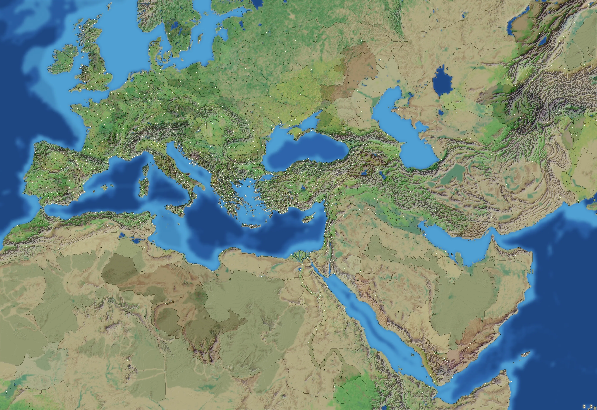
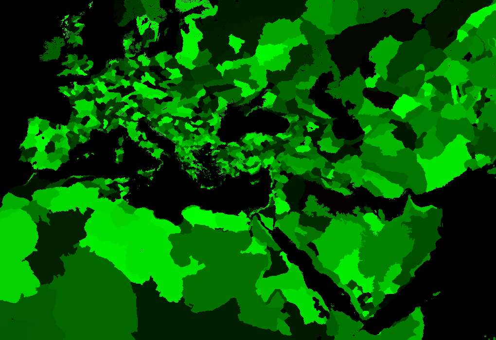

RTR: Imperium Surrectum
RTR: Imperium SurrectumThe world map
← wiki index · all regions and settlements
The campaign map at the start of the Unified Romans campaign. Drag to move, scroll or pinch to zoom, point at a region to see who holds it, click to open its page. Settlement names appear as you zoom in. Colour by paints the regions by who holds them, their culture, people, terrain, climate and more; click a name in the key to show only that one.

